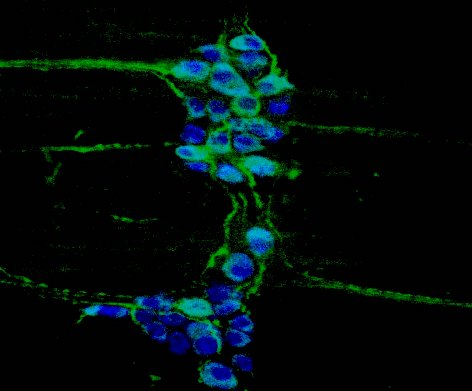
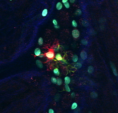

Our lab studies the enteric nervous system — a nervous system embedded within the gut's dynamic barrier environment. Enteric neurons develop and function amid constantly changing signals from microbes, immune cells, the intestinal epithelium, nutrients, and other environmental inputs. This makes the gut a powerful system for asking fundamental questions about neuronal cell biology: How do neurons acquire and maintain their identity? How do they respond to environmental perturbations? And what enables neural circuits to adapt, remodel, or regenerate?

We use the gut microbiota as a tractable environmental perturbation to uncover how intrinsic developmental programs interact with the surrounding tissue environment to build, maintain, and reshape the nervous system. By defining these mechanisms in the ENS, we aim to discover principles of neuronal identity and plasticity that can inform our understanding of nervous systems more broadly.
Environmental Control of Enteric Nervous System Development and Plasticity
How does a changing environment shape a nervous system?
Using gnotobiotic mouse models and defined microbial communities, we investigate how microbial exposure influences enteric neuron development, identity, organization, and function. We are particularly interested in how environmental signals shape neuronal subtype identity and circuit formation, and how they influence the nervous system's capacity to remodel or recover following perturbation.

Through these studies, we aim to uncover broader principles governing how neurons sense changes in their environment, preserve or alter their identity, and engage programs of adaptation and repair.
Human Enteric Nervous System Development
How do intrinsic developmental programs interact with environmental signals to build a human nervous system?
Using human pluripotent stem cells and innervated intestinal organoids, we reconstruct key aspects of human enteric nervous system development in a controlled setting. These models allow us to disentangle how signals from microbes, intestinal cells, and neurons themselves influence neural differentiation, identity, maturation, and organization.
By connecting human developmental models with discoveries from the intact gut, we aim to understand how intrinsic and environmental signals work together to shape human neuronal development, plasticity, and regenerative capacity.
Long-Term Vision
Our long-term goal is to define how environmental information becomes integrated into the developmental and homeostatic programs of neurons. We want to understand how nervous systems achieve two seemingly opposing properties: maintaining stable cellular identities and circuit functions while retaining the capacity to adapt when their environment changes.
The enteric nervous system provides an unusually accessible setting in which to discover these principles. As the lab grows, we aim to ask whether mechanisms uncovered in the gut represent general strategies used by neurons across the peripheral and central nervous systems to respond to perturbation, maintain identity, and recover from injury.
Ultimately, we hope that uncovering the fundamental biology of neuronal plasticity will reveal new principles and strategies for nervous system repair and regeneration, with broader relevance to regenerative medicine and to neurodegenerative and neurodevelopmental diseases.